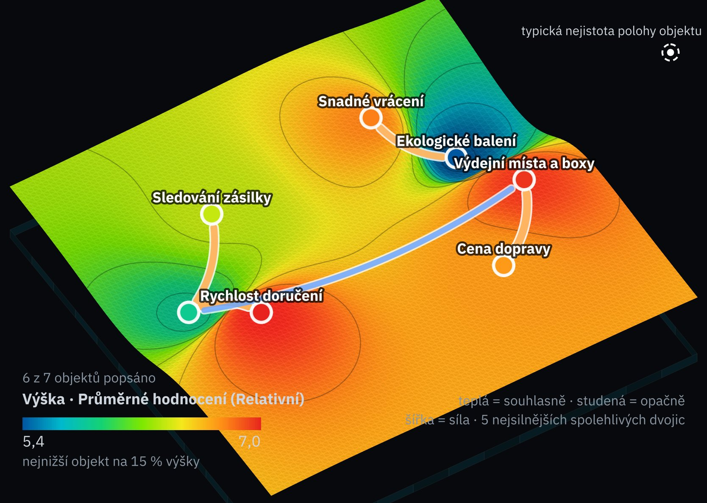
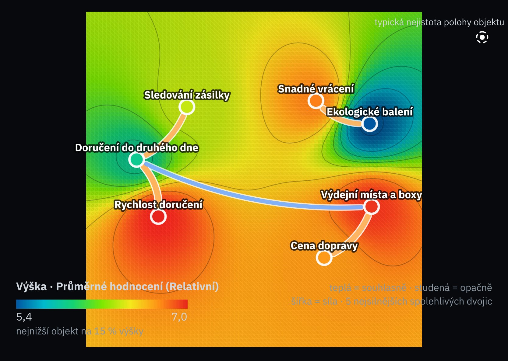
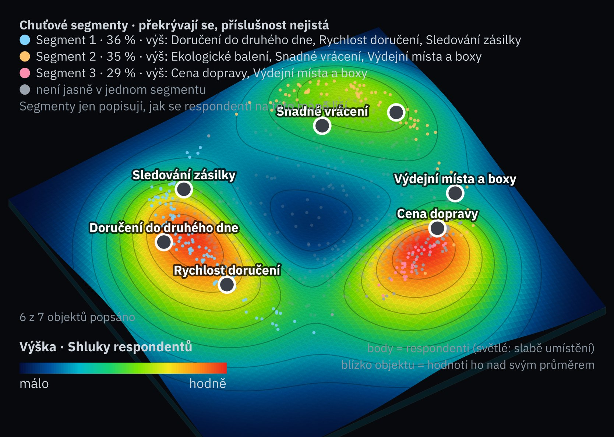

Klienti / Velis Commerce s.r.o.
Zákazníci a rychlost doručení
Sociomapa
Uloženo01
Co je při doručení důležité · n = 800
aia-sociomap-5


Vypočteno enginem aia-sociomap-5 na smyšlených datech (800 fiktivních respondentů), nakresleno funkcí obrázku zprávy. Výška = průměrná důležitost; blízkost = lidé hodnotí podobně; čára = souvislost dvojice (teplá souhlasně, studená opačně). modelováno
02
Co mapa říká
z mapy1
Rychlost a doručení do druhého dne patří k soběnejsilnější souvislost na mapě, r̃ = 0,53
2
Cena dopravy a výdejní místa jsou druhý pólr̃ = 0,47; kdo hlídá cenu, chce i výdejní místo
3
Snadné vrácení a ekologické balení drží spolur̃ = 0,40; třetí skupina
4
Doručení do druhého dne a výdejní místa stojí proti soběr̃ = −0,33
03
Chuťové segmenty
engine| Segment | Podíl | Hodnotí výš |
|---|---|---|
| 1 · rychle | 36 % | Doručení do druhého dne, Rychlost doručení, Sledování zásilky |
| 2 · pohodlně a ekologicky | 35 % | Ekologické balení, Snadné vrácení, Výdejní místa a boxy |
| 3 · levně | 29 % | Cena dopravy, Výdejní místa a boxy |
Segmenty se překrývají a příslušnost je nejistá; jen popisují, jak se respondenti na téhle mapě liší. Věrohodnost mapy (split-half) 0,97, práh 0,59; spolehlivých dvojic 17 z 21.
04
Kdo z kterého segmentu odejde
engine × B3| Segment | Respondentů | Přestal(a) by nakupovat při +1 dni | 90% interval |
|---|---|---|---|
| 1 · rychle | 287 | 7,7 % | 5,5–10,7 % |
| 2 · pohodlně a ekologicky | 283 | 1,4 % | 0,6–3,1 % |
| 3 · levně | 230 | 0,4 % | 0,1–1,9 % |
Křížení segmentu, který našel engine, s odpovědí v B3 (Wilsonův interval). Ztráta je soustředěná v segmentu „rychle“; ostatním stačí výdejní místo a cena. Proto expres jen pro tuto skupinu ve městech, ne pro všechny.
Sociomapa strategií propojeného modelu je u modelu. Obě mapy počítá stejný engine; ukazují se vedle sebe, nikdy se neslučují.